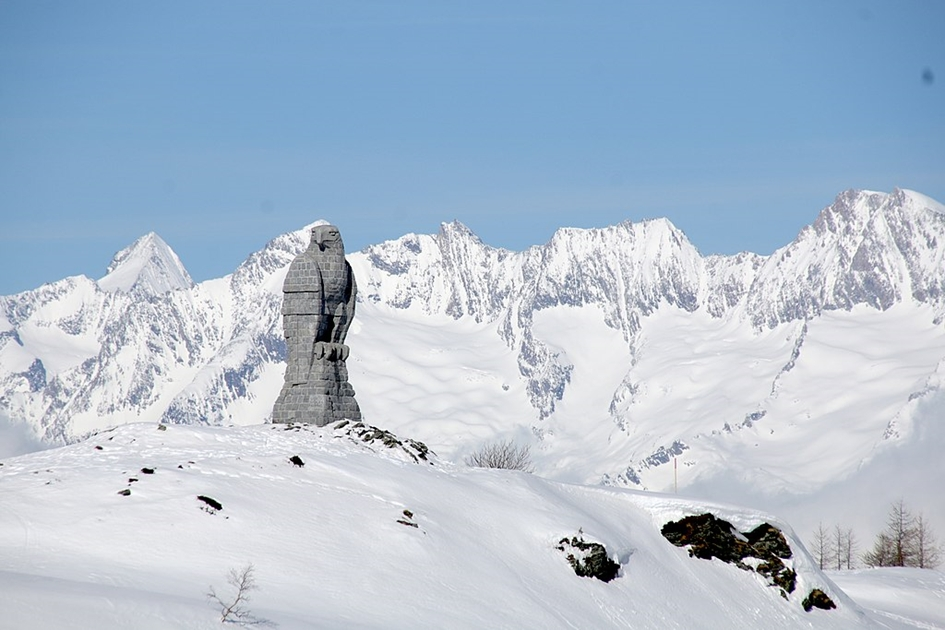
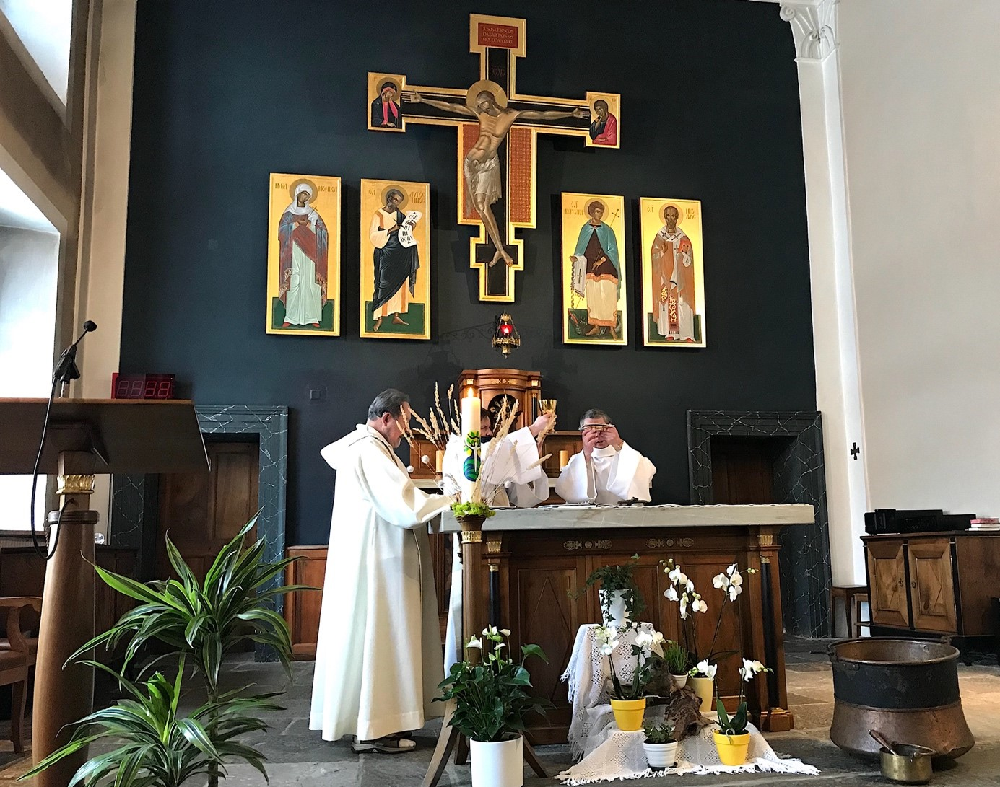
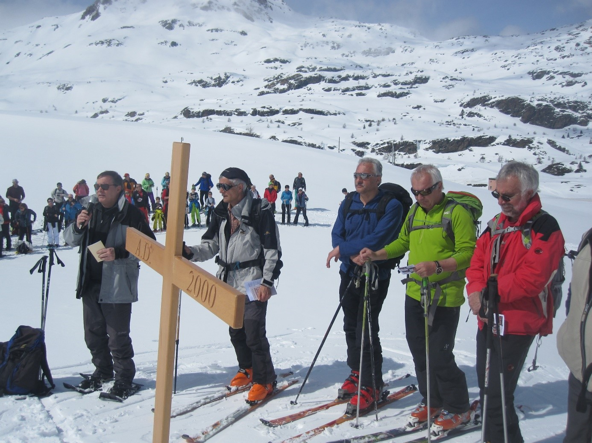

In unmittelbarer Nähe des auf 2005 m gelegenen, höchsten Punkts des Simplonpasses thront dessen Wahrzeichen, der von den Soldaten der Gebirgsbrigade 11 der Schweizer Armee am Ende des zweiten Weltkriegs aus Felsenquadern gebaute, 9 m hohe Adler. Ihm gegenüber steht ein dreigeschossiges Haus, das mit den Ausmassen von 20 x 64 m grösste Passhospiz der Alpen: das Simplon Hospiz.
Der Steinadler auf der Passhöhe ist das Wahrzeichen des Simplonpasses (Bild: Hans-Peter Baumeler).
Von der Kaserne…
Der Bau des Hospizes geht auf einen Befehl von Napoleon Bonaparte (1769–1821) zurück. Als dieser nämlich mit seinen Truppen im Mai 1800 auf dem Weg im zweiten Koalitionskrieg zur Schlacht in Marengo (14. Juni 1800) den Grossen Sankt Bernhard überquerte, wurde ihm im Hospiz von den Augustiner-Chorherren neben Unterkunft und Verpflegung auch der Rat gegeben, dass er bei einem nächsten Kriegszug doch besser den rund 500 Meter tiefer gelegenen und viel einfacher zu überquerende Simplonpass begehe. Nach der Analyse dieses Rates durch seine Generäle erteilte der Erste Konsul der Französischen Republik zwei Befehle: Die Erbauung der Simplonstrasse und der Bau einer grossen Kaserne auf dem Pass, die ebenfalls von den Chorherren des Grossen Sankt Bernhards geführt werden sollte.
Die erste Order wurde unverzüglich in Angriff genommen, so dass die Strasse bereits 1805 fertig erstellt
war. Der Bau
des Hospizes verzögerte sich. Die Grundsteinlegung erfolgte erst 1813, also zu einem Zeitpunkt, an
welchem der Stern
Napoleons schon am Erlöschen war. Nach seiner Niederlage im Russlandfeldzug im Herbst 1812, verlor er
einige Monate
darauf die Völkerschlacht in Leipzig und schliesslich, zurückgekehrt aus seinem Exil auf der Insel Elba
(Herrschaft der
hundert Tage) im Juni 1815 auch die Schlacht bei Waterloo. Napoleon wurde endgültig abgesetzt und auf
die britische
Atlantikinsel Helena verbannt.
Das unter der Bezeichnung «Departement du Simplon» ins napoleonische Reich eingegliederte Wallis wurde
eigenständig und
schloss sich im August 1815 als Kanton der Eidgenossenschaft an. Die Bauarbeiten am Simplon Hospiz
wurden in den Wirren
dieser Zeit eingestellt, bis schliesslich die Chorherren den Bau unter dem Lausanner Architekten Henri
Perregaux
(1785–1850) fortführten und 1831 fertig erstellten.
Spätherbststimmung auf dem Simplonpass (Bild: Hans-Peter Baumeler).
… zum Begegnungshaus
Das riesige Gebäude hatte dann eine recht wechselhafte Geschichte. Während des ersten und zweiten
Weltkriegs wurde es zu
dem, für was es eigentlich von Napoleon konzipiert gewesen war: eine Kaserne, die allerdings nicht
französischen,
sondern Schweizer Soldaten, welche die Grenze gegen Italien absicherten, als Unterkunft diente. In den
90er Jahren des
19. Jahrhunderts übernachteten mehrere Tausend Italiener pro Jahr im Hospiz. Diese wurden von den
Schweizern geholt, um
den Simplon Eisenbahntunnel zu erbauen. In den 50er Jahren des 20. Jahrhunderts führten die Chorherren
einige Jahre im
Hospiz eine Internatsschule.
Heute betreiben es die Chorherren als ein Begegnungshaus, getreu der Devise ihres Mutterhauses «Hier wird
Christus
angebetet und ihm gedient», wobei die vom ehemaligen Prior Gratien Volluz (1929–1969) wiederentdeckte
Bergspiritualität
das Haus charakterisiert. Vor allem Schul- und Firmgruppen, Ferien- und Musiklager werden hier
aufgenommen und betreut,
aber auch Familien zu Exerzitien, Alpinisten und Wanderer. Jährlich zählt das Haus rund 18‘000
Übernachtungen.
Die Hospizkirche
Das Herz des Hospizes bildet die Kirche, die fast einen Viertel des südlichen Teils des Hauses einnimmt. Hier fallen dem Betrachter sofort die 1995 vom Künstler Klaus Kegelmann geschriebenen Ikonen auf. Vier 150 x 64 cm grosse Ikonen zeigen den Ordensgründer und die Schutzheiligen der Chorherren vom Grossen Sankt Bernhard: den heiligen Bernhard von Aosta (von Menthon, um 1000–1081/86), den heiligen Nikolaus von Myra (um 270–343), den heiligen Augustinus (um 354–430) und dessen Mutter, die heilige Monika (um 331–387). Imposant ist das 266 x 240 cm grosse Kreuz im italienisch-byzantinischen Stil. Eine seltene Besonderheit ist das Kirchenmobiliar im Empire Stil. Nur in zwei Pariser Kirchen kann man sonst noch solch ein Mobiliar im napoleonischen Kunststil antreffen.
Feier der heiligen Eucharistie in der Osterzeit in der Hospizkirche (Bild: Hans-Peter Baumeler)
Das dem seligen Maurice Tornay (einem Mitglied der Kongregation, der 1949 in der Tibetmission an der sino-tibetischen Grenze den Märtyrertod erlitt und 1993 von Papst Johannes Paul II. selig gesprochen worden ist) geweihte, kleine Oratorium hinter der Sakristei lädt zum persönlichen Gebet ein. Mehrmals am Tag kommt die heute vier Ordensmänner zählende Gemeinschaft in der Kirche zum Stundengebet zusammen, das in französischer Sprache gehalten wird. Die Eucharistiefeiern werden meist mehrsprachig – deutsch, französisch oder italienisch – gefeiert. Immer wieder dient die Kirche auch für Hochzeiten und Taufen.
Halt auf der Karfreitagsprozession zur Betrachtung einer Kreuzwegstation (Bild: Jean-Louis Borter)
Zur speziellen Tradition des Hospizes gehört der Karfreitagskreuzweg, zu dem bei schönem Wetter bis zu 400 Gläubige auf Skiern oder Schneeschuhen in Viererkolonnen stillschweigend vom Hospiz zur rund 400 m höher gelegenen Chruchtuluhfluh steigen. Die rund zwei Stunden dauernde Prozession wird vier Mal unterbrochen, um verschiedene Stationen des Kreuzwegs Jesu mehrsprachig zu betrachten.
Daniel Salzgeber ist Mitglied der Kongregation der Augustiner-Chorherren des Grossen Sankt Bernhards (Canonici Regulares Congregationis Sancti Bernadi, kurz: CRB). Als Regularkanoniker lebt er seit zehn Jahren im Simplon Hospiz.
Weitere Artikel von {{author.author}} finden Sie hier:
- {{author.location[i]}}: {{author.fulltitle[i]}} {{beitrag}}
Zur Vertiefung:
- https://gsbernard.ch/simplon
- Lucien Quaglia, La Maison du Grand-Saint-Bernard des origines aux temps actuels, Martigny 1972.